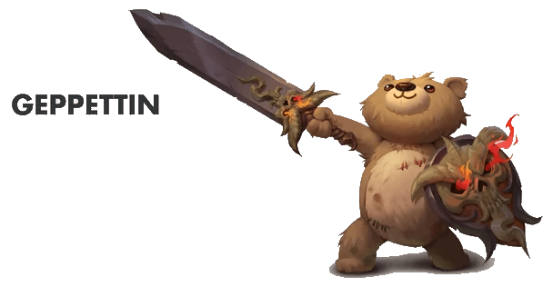

Scarlet Horizons

• No. Enc: you should hope just one...
• Alignment: Chaotic
• Movement: 20'
• Armor Class: 5 (small size and Dexterity)
• Hit Dice: 3+3 (typically 14-17 HP) or by PC level
• BAB +3
• Attacks: by weapon or 1d2
• Damage: By single weapon attack (1d4)
• Save: F4
• Morale: 11
• Hoard: 2d6 chroma, 1d4-1 royals, 1d4+1 copper (25% it's Red Cuprous)
Experience Yielded: 500 for an individual Geppettin
Geppettin do not require food or drink. They do not sleep. They are +4 to save against mind-affecting effects. They are resistant to cold-based damage but suffer normal vulnerability to electrical, acid, and fire-based damage.
Geppetin don't breathe; therefore, they are immune to gaseous attacks and drowning / suffocation.